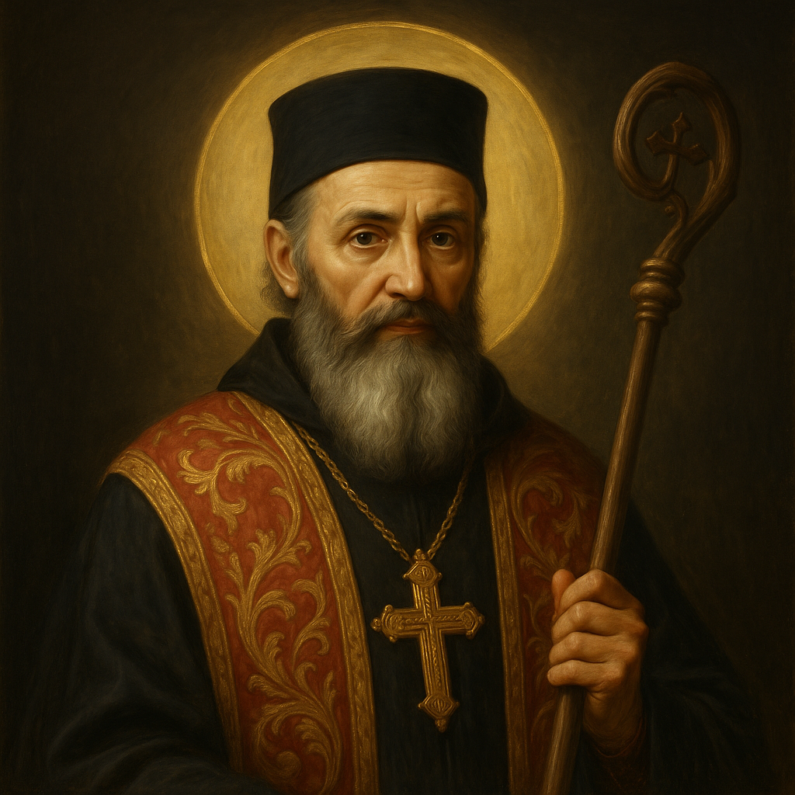

Acompanhe a Palavra de Deus e celebre a vida dos santos.
Dia selecionado
Quinta-feira, 12 de novembro de 2026
Carregando celebração…
Buscando as leituras…
Acessibilidade das leituras
14 px
Primeira leitura
—
Carregando texto bíblico…
Salmo responsorial
—
—
—
Evangelho
—
—

Santo do dia
São Josafá
Conheça a história, a missão e o testemunho de fé do santo.
Santo do dia · 12 de novembro
São Josafá Kuncewicz
Bispo e mártir da unidade da Igreja · c. 1580–1623
São Josafá nasceu por volta de 1580, na região da atual Ucrânia. Em 1604, ingressou no mosteiro basiliano da Santíssima Trindade, em Vilna, adotando o nome de Josafá. Foi ordenado sacerdote em 1609 e consagrado bispo em 1617.
Como pastor, dedicou sua vida à unidade dos cristãos e à comunhão com a Igreja de Roma, preservando a tradição litúrgica bizantina. Cuidava dos pobres, visitava suas comunidades e promovia a formação do clero.
Em 12 de novembro de 1623, durante uma visita pastoral a Vitebsk, foi morto por opositores. Sua morte foi reconhecida como martírio. Foi canonizado pelo Papa Pio IX em 1867.
Seu testemunho: São Josafá é lembrado pelo compromisso com a unidade, pela coragem diante das dificuldades e pelo serviço pastoral ao povo de Deus.